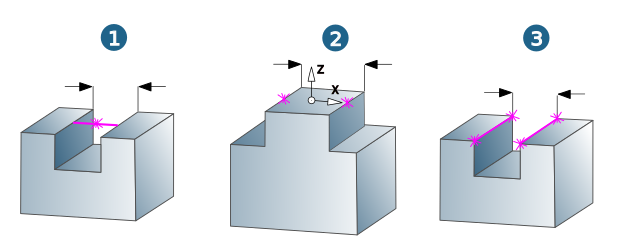
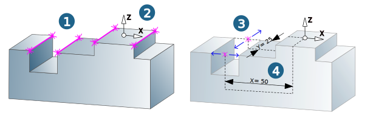
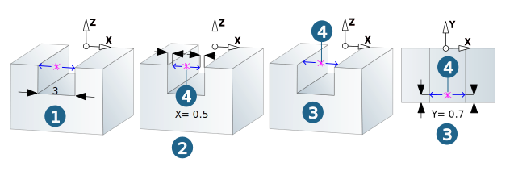
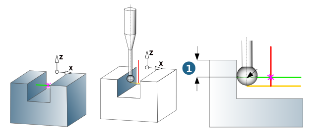

Contours
Selection mode/Select contour
|
|
Middle point: Select the middle point of a contour and specify the Slot-Rib width. 2 Points: Select the first and second point. 2 Lines: Select the first and second line. |


The required NC parameters are determined based on the selected geometric elements. The selected elements must be level with the Z axis of the machining frame.
|  |
Contour attributes
Probing mode: Use Slot or Rib to specify whether a slot (1) or a rib (2) should be measured with the selected contour elements.
Probing direction: For the Middle point selection mode, define the probing direction using X or Y. The probing direction is calculated automatically in the 2 Lines or 2 Points selection mode. The defined/calculated probing direction is displayed graphically (3).
Middle point: Displays the position (X, Y coordinates) of the selected contour elements in relation to the origin of the defined frame (4).
|  |
Slot-Rib width (1): Define the slot-rib width in the Middle point selection mode. The slot-rib width is calculated and displayed automatically in the 2 Lines or 2 Points selection mode. Example: Slot-rib width = 3.
Offset (2): The offset refers to the measure position (4) and the orientation of the frame axes. Example: Offset in X direction = 0.5.
Position shift (3): The position shift refers to the measure position (4) in the direction of the frame axes. Example: Position shift in Y direction = -0.7.
|  |
|
Measuring depth: Corresponds to the contour depth. The measuring depth (1) is measured in the center of the ball of the probing tool. It is specified either relative to the contour (option: Relative to contour) or as an absolute value relative to the job frame (option: Absolute (jobframe)). |
|  |